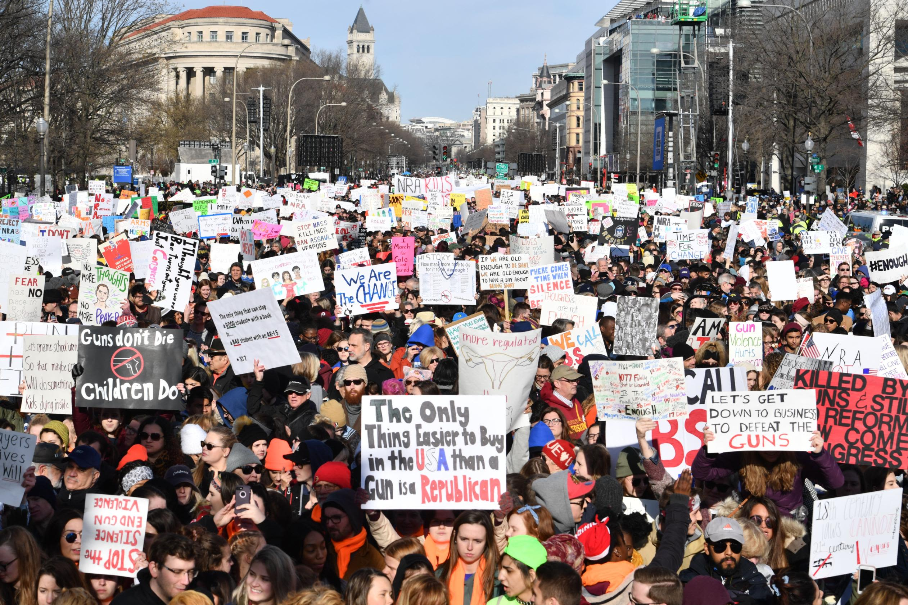

Karson Robinson, shown in 2017 at age 7. His friend Jacob Hall was killed in a shooting at Townville Elementary School in South Carolina. (Ricky Carioti/The Washington Post)
By John Woodrow Cox and Steven Rich of the Washington Post
The number was staggering.
The Washington Post ran that figure in huge type atop its front page on the day that survivors of the Parkland, Fla., shooting held a massive March for Our Lives rally in D.C., where tens of thousands of other young people joined them. Throughout the sprawling crowd, demonstrators held up copies of The Post, a tangible illustration of the crisis’s catastrophic scope.
Now, just five years later, and despite a pandemic that closed many campuses for nearly a year, the number has exploded, climbing past 338,000.
We know that because we’ve continued to maintain a unique database that tracks the total number of children exposed to gun violence at school, as well as other vital details, including the number of people killed and injured; the age, sex, race and gender of the accused shooters; the types and sources of their weapons; the demographic makeup of the schools; the presence of armed security guards; the random, targeted or accidental nature of the shootings.
More than a year before Parkland, a 14-year-old boy in rural South Carolina took a handgun from his father’s dresser and killed him with it. Then the teenager drove to Townville Elementary and opened fire on a playground scattered with first-graders. His gun jammed 12 seconds after he fired the first round, but by then, he had already shot a teacher and two students, including Jacob Hall, the smallest kid in his class. Jacob, who was 6, died three days later.
The story quickly faded from the national news because only a single child died, but when I traveled to Townville, I heard not about one victim, but hundreds.
Noises are different now
-Denise Fredericks, principal of Townville Elementary
Fredericks banned balloons at the spring festival that year — and now, six years later, she won’t allow them this spring either. Her students haven’t forgotten what happened in those 12 seconds. Some of them still ask to talk to her about it.
“Our recovery,” she said, “it’s not a linear thing.”
My first trip there was revelatory because it made clear that the vast majority of Americans fundamentally misunderstood the scope of this problem.
Each shooting becomes synonymous with its death toll, the lone figure most people remember. At Columbine High in Littleton, Colo., it was 13. At Marjory Stoneman Douglas: 17. At Robb Elementary in Uvalde, Tex.: 21. At Sandy Hook Elementary in Newtown, Conn.: 26.p>
After reporting in Townville, I began trying to add up how many children Siena and Karson represented, poring through thousands of news stories to identify every shooting I could find dating back to the Columbine attack in April 1999. My colleague Steven, a database editor, soon joined the effort, expanding the areas we tracked and analyzed.
For reasons that researchers are still trying to understand, gun violence soared during the pandemic, a trend that spilled onto K-12 campuses when many of them reopened in the spring of 2021.
By nearly every meaningful measure, 2022 was the worst year of school shootings in history. Across 46 acts of violence during school hours, 34 students and adults died while more than 43,000 children were exposed to gunfire at the places they go to learn and grow.
School shootings are rare.
That is, statistically, true, in the sense that a child is highly unlikely to experience one. But it’s also an assertion that infuriates many people, and for good reason. Are school shootings in the United States “rare” compared with the number in, say, Canada or England or Germany or any other developed nation? No, they are not.
Our database also excludes hundreds of incidents every year that don’t technically qualify but that still terrify and traumatize tens of thousands of children: shootings at after-school sporting events, for example, or gunshots fired just off campus.
And almost no students can escape the reminders that someone could open fire in their classrooms at any moment. In a country where gun violence is now the leading cause of death for kids and teens, millions of children must walk through metal detectors or run through active-shooter drills meant to prepare them for the threat of mass murder. By one estimate, school systems employ as many as 20,000 resource officers nationwide in an effort to keep their buildings safe.
Ten months after Parkland, on a Florida campus 200 miles north, Lake Brantley High declared a “code red” emergency over the intercom, indicating that the 2,700-student campus faced immediate danger.
“Active Shooter reported at Brantley,” read a text sent to teachers. “Initiate a Code Red Lockdown.”
Students wept, had asthma attacks, messaged parents goodbye — but the threat wasn’t real. It had been a drill, kept secret “so people will take it seriously,” a spokesman later argued, insisting it was “the only way to get their attention.”
And then there’s the consequence of school shootings that could never be described as rare: actual lockdowns.
In the 2017-2018 school year, we found that more than 4.1 million children suffered through at least one of them — and nearly 60 percent were caused by gun violence or the threat of it.
This is a clear and pressing public health issue.
-Steven Scholzman, child psychiatrist and associate professor at Dartmouth College
The worst incidents — most commonly carried out with semiautomatic rifles or shotguns — have also distorted people’s understanding of what attackers tend to use. Among the cases in which authorities identified the firearm, a single handgun is the weapon of choice 80 percent of the time.
But no data point about shooters and their guns has been more revelatory than where the former group obtains the latter.
We have reviewed 181 shootings committed by children since Columbine, and within that group, we found 132 cases in which the weapons’ sources were made public.
The young would-be shooters rarely bought firearms on the street or stole them from strangers’ cars or houses, because they didn’t need to. In 86 percent of the cases we examined, the children found the guns in the homes of their friends, relatives or parents.
With every new shooting comes a new round of (mostly old) ideas on how to stop them.
Until this past summer, when Congress passed a gun-safety bill for the first time in decades, federal lawmakers had done virtually nothing to address the problem, and it could take years to determine whether their recent effort makes any difference.
As a consequence, the onus to keep children safe has largely fallen on the schools themselves. The result? A private industry that brings in $3.1 billion a year selling largely unproven security systems to districts desperate to do something.
Thousands protest along Pennsylvania Avenue in Washington during the March for Our Lives in 2018. (Joe Sohm/Getty Images)
Protestors filled a street in Washington during the March For Our Lives rally.(Nicholas Kamm/Getty Images)